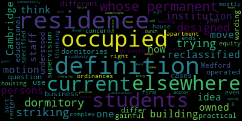
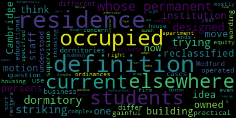

total time: 15.21 minutes
total words: 2528

total time: 7.61 minutes
total words: 1232

total time: 2.33 minutes
total words: 325

{kind=link}
total time: 9.13 minutes
total words: 1533

[Innes]: Thanks.
[Collins]: There will be a meeting of the Planning and Permanent Committee, October 9th, 2024. This meeting will take place at 6 p.m. in the City Council Chamber, second floor, Medford City Hall, 85 George P. Hassett Drive, Medford MA and via Zoom. Mr. Clerk, please call the roll.
[Hurtubise]: Present. Present. Councilor Callahan.
[Collins]: Present.
[Hurtubise]: Councilor Lemming. Present. Councilor Scarpelli. Present. Chair Collins, Vice President Collins.
[Collins]: Present. Five present, none absent. The meeting is called to order. We are also joined by non-voting members of the committee, Councilor Seng and Councilor Lozaro. The action and discussion items for this committee are again paper 24-033, Zoning Ordinance Updates with the Innis Associates Team. The meeting notice writes that we are going to discuss the green score proposal, discussion of housing definitions, and general discussion of updates to the zoning ordinance. We're actually not going to be discussing green score proposal tonight. We've discussed that in previous meetings. The zoning consultant is doing more work on that side of things before we bring it forward to this committee for another public discussion. So that is one of many items that is in progress, but we won't be speaking about it this evening. For tonight, we are going to focus the conversation on two main discussion points. We're going to revisit the housing definitions that were first circulated during the week of September 11. I don't remember if that was the date of the meeting or the date that the meeting notice went out, but we have recirculated those housing definitions. And since we've discussed them before and counselors have had several weeks to review, formulate comments and questions, I'm hoping that that is a piece that we can consolidate all of our remaining questions, comments, requested subtractions, additions on, and get that to a condition where it's able to report out as part of the incoming package of updates that we've been working on for the past four to six weeks. And just to finish summarizing the agenda for tonight, We are also going to discuss the zoning proposal for Mystic Ave. We've gone over this in great detail in a couple meetings of this committee recently, and we're going to hear some, I think at our most recent meeting was when we reported out, sorry, at our most recent meeting, we approved some recommendations from the zoning consultant on how to move forward with zoning for Mystic Ave. And I understand that there are some minor changes, suggestions, additions to what the council, what this committee approved. So we're going to review and discuss those this evening. And I think we're still planning to have those back in this committee on October 23rd so that we can hopefully report them out and get them on the pipeline where they will then be reviewed by the Community Development Board. So I am happy to turn it over to my fellow counselors if they have any initial questions, and then to turn it over to our housing consultant to lead the discussion on the housing definitions. Any comments or questions from counselors to lead us off today? Great. In that case, thank you so much to NS Associates for being here with us once again. And Paola, I assume that we're going to be hearing from you. These are, again, these are housing definitions that we have seen before and reviewed before. So if members of the public are interested in the presentation on the housing definitions, that can be found in recordings of our previous committee meetings. Paola, if you want to give us the kind of 30,000 foot overview of what we're looking at here and why these are so important to put into our updated zoning, that would be great. And then we'll move on to comment from councilors.
[Ramos-Martinez]: Yes, hi. Good afternoon to everyone. So yeah, my name is Paula Ramos-Martinez. I'm with Ines Associates. I'm their senior urban planner and designer. I'm accompanied today by Emily Ines, the director of Ines Associates, and by Jimmy Rocha, our GIS specialist. So about the definitions, we're going to start with definitions and I'm going to pass that on to Emily and she's going to explain all the definitions and everything that needs to be known. Thank you.
[Innes]: Good evening, Councillors. Again, for the record, Emily Ennis of Ennis Associates. Just wanted to run through and if I may share my screen, I will put it up here. Perfect. I can see that I have that ability. This is the memorandum we prepared for the meeting or the week of September 11th. We had been asked by yourselves to address a couple of additional housing situations rather than types, a couple of different ways that people commonly can live together to provide more options for people as they age, for people as they choose to live together in different ways, and also to address some of the existing conditions, but perhaps with different types of definitions. So our memorandum showed co-living, so the idea of people intentionally choosing to live together, and co-housing. We had two separate definitions on that. The idea for both of those would be that people might have an independent unit that was theirs alone, but was they were sharing common spaces. So, sharing kitchens, sharing living spaces and other facilities. We also had congregate living. This is something that had been brought up, I believe, by one of the counselors, the idea of congregate housing. We chose a couple of definitions from adjacent communities that had just some slight differences in how they presented these definitions. And we wanted to get your thoughts on those before we pass them forward. So Somerville had congregate housing. Cambridge was focused on elderly congregate housing. Arlington had a group home. You could actually have all three of these definitions if you wanted to, or you could choose one. You do already have a definition for dormitory, as does, unsurprisingly, Cambridge and Somerville. And these are slightly different than congregate housing. Again, we're talking about a building in which people who are not necessarily related by marriage or by genetics, but are living together in certain situations, these definitions are all valid for those different types. We had also talked, and I think this was with planning staff, about single room occupancy and what you had now. You currently have a definition for lodging house. Somerville has a rooming house. Cambridge, like yourselves, has a lodging house. Burbank, California, we had to go a little bit far afield for the precise definition I was looking for. They call it a single room occupancy hotel. These are all variations on a housing type that has people who have their individual rooms, but they are getting, it's not necessarily a group of people who have chosen to live together as in the definitions at the top of this, but people who need a certain level of affordability. And this is actually quite a traditional housing type. And then finally we had shared housing, which was multi-tenant. A little bit different from the definitions we provided earlier. Closer in some ways to the single room occupancy. This one from Salt Lake City was interesting because it came with standards. As you know, as I think we've discussed before, we are not putting standards in definitions. They go into a separate or we'll go into separate use standard sections, but we thought it would be interesting to show you this definition from Salt Lake City contrasting with the others and the standards that went along with this definition. So these are the ones where we're looking for guidance from you. I think as I said before, certainly these first couple, let me just make you all dizzy as well as myself by zooming up. Co-living and co-housing are pretty close. We probably want a decision there. The congregate living, you could actually have all three. One is general congregate living, one is elderly specific, one is the group home, or you could choose one and just allow it to apply to all of the situations. You already have the definition of dormitory. We just wanted to show you the difference with the congregate living. And then I think the single room occupancy needs guidance from you all as to a preferred definition if you want something other than your current lodging house.
[Collins]: Thank you so much. I'll recognize Councillor Callahan.
[Callahan]: Thank you. So, in looking over these I had a few comments, starting with the co housing. I think that definition is pretty good, but if you look at. So, in Cambridge there are two different co housing. places. One of them is more like townhouses, and the other one is more larger buildings, a little bit more like apartment buildings, I think. And so I would want to, like, I think the definition of co-housing hopefully should not limit it to small single unit or two unit buildings, but rather be a building or set of buildings, right? just to open it up a little bit in case people want to basically build co-housing that's a little bit more like an apartment building but has a bunch of shared facilities as well. My second one is about co-living and I think what I'm hoping to do is to make a distinction between co-living and which is tenants choosing to live with each other as something we specifically want to allow and encourage in Medford. And there's also something else that I think we specifically want to discourage in Medford. And the difference is really whether the tenants select who the other tenants are, or whether the landlord selects the tenants. So for example, I did a slight update to the co-living. saying a building in which a group of residents pay rent to occupy a single unit with private bedrooms and shared living spaces, including cooking and sanitary facilities, such residents have input over the selection of the other residents living in the housing unit. And I have a little bit of extra language in case it's necessary. I don't know whether it's necessary, but the end of that sentence could be either because they apply for the lease jointly or because when one or more tenants moves out, the residents jointly select a new tenant to add to the lease. I think that the concept that residents have input over the selection of the other residents is important in co-living. And then the one I would want to discourage is basically the same, but saying residents of this other thing, which I don't know what the name would be, do not have input over the selection of the other residents living in the housing unit.
[Innes]: I'm thinking I love the first part of the language of the tenant selection. I think that's a very good distinction. I'm thinking about the prohibition of the other because there are so many different types of general apartments, for example, where the tenants would not have control over who, you know, if you go and lease an apartment, you don't have control or your neighbors don't have control over your lease and that. So I want to be careful that there's not an unintentional consequence of that.
[Callahan]: You say a group of residents pay to rent, pay rent to occupy a single unit.
[Innes]: Okay, I'm sorry, I didn't quite catch that. For some reason, the sound on my laptop is not as good as it was pre vacation. So yes, if we could correspond and get the exact language from you, that'd be really helpful. Thank you.
[Callahan]: Great and I would love that that'd be amazing. I think that's most of my, my, my comments. I did notice when I was looking through the definition, the definition of like a lodger, and of a lodging house. To me the definition of a lodger was not clear but apparently it is pretty clear because you know to the staff because they have been dealing with this code for you know this zoning for you know many years. They understand what it means which maybe is plenty and that's all we need to do. I thought that lodger and lodging house were related to each other, which apparently they really aren't. I think the lodging house definition is slightly problematic. Let me just find, sorry if I can find that. Oh, my other comment about congregate living is I don't know that we need them. I know that elderly-oriented congregate living, we have a lot of senior housing definitions already in our zoning, so I'm not sure that having an elderly-oriented congregate housing would conflict with that. Yeah, I'll leave it there, thanks.
[Collins]: Okay, thank you. Great. Thank you so much, Councilor Callahan. Councilor Lemming?
[Leming]: I had a question on Medford's current definition of dormitories. And I'm just trying to get an idea for myself of the practical cases where these different definitions would differ. Our current one is building designed for or occupied as a residence for students or staff owned by or under the supervision of an institution or an educational use which is not operated as a gainful business. With the wording for that, could that be understood as, could you like have an apartment complex or a house which is owned by an institution of some sort, even like a private equity firm, but ends up housing mostly students? Would that be reclassified as dormitory under our current ordinances?
[Innes]: I'm looking at the definition, thinking that through. I think the owned by or under the supervision of an institution for an educational use. I have to say that I'm looking at that comma after institution and thinking that I might want to replace that comma because it makes it a little bit unclear. But a for-profit company is not normally considered an institution. So I think that would prohibit. I know what you're asking. There are certainly for-profit companies out there that do have private dormitories. And so the question is whether this would allow or prohibit that is a good one. We could look into that further. I think right now that it would not cover a for profit, I don't know. And maybe this is for planning staff to answer. If you have ever been if you the city of Medford have ever been approached by a for profit dormitory operator.
[Cohn]: And so like, I assume you're talking about not the university.
[Innes]: Exactly. Yeah.
[Cohn]: I don't want to say no, I would say that there has been some conversation where there are there are companies who build dorms or apartments designed for graduate students have expressed some interest in doing something that would be catering to the student population. And when it's apartments, in my mind, it could go either way, like maybe that's their target population, but it's an apartment's an apartment. If it's a dormitory style, That's sort of a different interesting thing. So I've one of the things that I wanted to focus to just think about, we need definitions, so that we can say what is allowed and not allowed. And if there are things where we're like, well, we don't really care. then we don't need the definition. In my mind, if a dormitory is owned by Tufts University, it doesn't necessarily need to be in our zoning. It doesn't matter if it's in our zoning because there's the Dover Amendment, and they can put that, you know, theoretically they would work with us, but it doesn't matter if we say dormitories are not allowed in this location. My understanding under Dover is that they could put it there anyhow. So if we're thinking about where are we allowing and not allowing dormitories, it would be private for-profit entities not affiliated with the university. And how is that different from, if it's different from an apartment building, and how does one think about that? There are for-profit entities running dormitories in the city of Boston, if I'm not mistaken.
[Leming]: I think my other concern with this definition is specified building designed by or occupied as a residence for students or staff so it's that It's that or right there. So what I'm thinking is that one year it could be occupied by all renters who are working in Boston. They all move out and then a bunch of students move in there and suddenly it's reclassified as a dormitory automatically just because it might not have been designed for that purpose, but now they're occupied. It's now occupied by them that you see what I'm saying there.
[Innes]: I see what you're saying and I have seen that in other communities where say it was a large house, and it has been converted into a dormitory. It's been bought by the university or the college and then converted into a dormitory for students. So it wasn't designed for a residence for students or staff, but it is now occupied as a residence for students or staff. And that's typically been after it's been purchased by the educational institution. Does that sound like what you're thinking of?
[Leming]: Yeah, I'm just trying to understand how... I'm just trying to go over the implications of the current definition, just add food for thought for changing it in the future.
[Collins]: If I may, and to follow up on the point that Director Hunt was making about sort of what's important for this discussion on definitions in terms of why we're updating the definitions before we update more of our zoning. And thinking about essentially like what are the semantic tools that we're giving ourselves with which to say we want this here, we don't want this here, we'd prefer this not here. I think the point about the current Bedford dormitory definition is well taken. I mean, I would be amenable to perhaps If we want to make sure that we have a higher degree of control over where dormitories are being proposed and built, I think that we could strike the, we could have a just say building designed for residents, for students or staff if we want to have more control over where residences explicitly for student populations are within our city. I don't think that this is I think there's some definitions that we're going to consider right now and over the next few months that are like critical so that we can do other things on our kind of slate of zoning goals. I don't know that this is one of them, but I think that that kind of change is in line with essentially what we're hoping to do with the definition. So I would just offer that. I can't make motions as the chair, but that makes sense to me unless somebody points out what I'm missing. And then it sounded to me like there were some some good ideas for updating the proposed definitions for co-living and co-housing.
[Cohn]: Madam Chair, for the dormitories, actually as we're reading them, I feel like the Cambridge definition is the most clear. about what it is. It doesn't matter how it was designed or whatever, but that it's controlled by the educational institution and it's occupied as a place of temporary residence whose permanent residence is elsewhere. Like I think actually that's the whole intention of a dormitory. And that would actually rule out the private company dormitory and I'm wondering if we want to do that at this time? And I do think, and I would say, as I'm saying that, in my mind, if a company was coming and saying, what we're gonna build is an apartment building, and we're gonna market it to students, and we're designing it with students in mind, but it's an apartment building, how is that any different from any other apartment building? We would like to see more places for students to live because the students are here, and we'd rather they weren't in our large, two single and two family homes, that those should be for families. But I wouldn't necessarily classify that as a dormitory. And would we want to zone that any differently from any other multifamily building?
[Collins]: Yeah, I find that persuasive. And reading over the Cambridge definition, I do think that that kind of captures the intent. Personally, I would be amenable to adopting the Cambridge definition. replace our current one along with the other updates.
[Leming]: Well, I could make that as a motion, but I would like to bring up with the Cambridge definition. Director Hunt, what do you think of the idea of striking the phrase for persons whose permanent residence is elsewhere?
[Cohn]: It's a place of temporary residence. So you would say by an educational and occupied primarily as a place of temporary residence. For like for purse for persons who are employed or enrolled at the educational institution right which because, for example, and honestly I'm extremely familiar with the MIT dormitory situation. They have faculty that live in they do not have another permanent residence somewhere else like they'll live there for eight or 10 years as their permanent location. And if you're a graduate student, you may have relocated there and you may not have another temporary or another permanent residence somewhere else, and that's fine, but you're also sort of temporarily here for the duration of your education. So yeah, I actually like that, the striking, the phrase, whose permanent residence is elsewhere.
[Innes]: I would agree with that.
[Leming]: So I guess I'll motion to adopt the Cambridge definition of a dormitory striking the words for persons whose permanent residence is elsewhere. And. And. So striking whose permanent residence is elsewhere and.
[Callahan]: That's your calling? I don't think we need a motion at this point because NS and associates is going to take this feedback and bring it back to us. Is that accurate?
[Collins]: I think that, um, I think it's fine to either motion things individually or to have the motion at the end of this meeting be to incorporate the feedback promulgated in the meeting and keep the paper in committee. So I think we, if it's, it's, if it's helpful to have the clerk compile them line by line, um, just means that I don't have to take notes. So I think either way is okay. Or it doesn't mean I have to take as scrupulous notes.
[Hurtubise]: I want to read it back. I have Councilor Lemming moving to adopt the Cambridge definition of a dormitory, striking the words persons whose permanent residence is elsewhere.
[Leming]: Just whose permanent residence is elsewhere and.
[Hurtubise]: Yeah. Striking the word, so leaving the word persons out of that stricken language. Yeah. Striking the words whose permanent residence is elsewhere. And. Yes. Okay.
[Collins]: it. Thank you. Is there a second? Is there a second on the motion? Great, seconded by Councilor Callahan. If there are not any other glaring questions or comments on the housing definitions, or are there any other glaring comments or questions on the definitions, Councilor Callahan?
[Callahan]: My only question is I sent an email with the language that I had suggested, which doesn't have to be exact, but is there anything else that we should do with this language or will Innocence Associates come back to us with these updates?
[Collins]: Thank you, Councilor Halihan. It's my understanding that once we incorporate the feedback that we just talked about on co-living, co-housing and the dormitories definition, The rest of these I think are in pretty good shape. We've discussed this before, so I think the next time we see this, it'll be in the condition that we could take a vote to report it out of committee. Emily Pella, I see nodding heads on Zoom, excellent.
[Innes]: That is correct, yes.
[Collins]: And we will have, we will follow up with the exact language of the updates to co-living, co-housing and dormitories. Great, thank you all. Let's move on to our discussion of the zoning proposal for Mystic Ave. And just to recap, at our last committee meeting where we discussed the Mystic Ab Zoning Proposal, we looked at a lot of excellent visuals created by NS Associates. Counselors were shown kind of two versions of a zoning proposal that were based on the many meetings we've had to discuss Mystic Ab and also incorporated the many documents that kind of encapsulate we did receive some City constituent counselor feedback. On what we want to see from Mr Gaff. Um that kind of had a mildly different interplay between these two versions expressing different ways that mixed use zones and commercial areas could fit together. Um. We reported out. We're sorry. I keep saying reported out. We approved one of them to go in conversation since that meeting, which I think was in the last week of September. I think it was the September 25th meeting, but I should fact check that. Between then and now, I think that city staff and its associates have discussed that draft map, and there are some minor changes to the plan that the committee approved that they wanted to brief the committee on before it comes back on the 23rd in a position that we can take a vote to report it out. So I'm happy to turn it over to Director Cohn if you want to start out or just kick it over to Emily and Paola to give us that update on what's changed since we saw it last.
[Cohn]: Thank you, Madam Chair. So what we've talked about was the need for having some area with industrial, some commercial, allowing some auto-oriented uses. and then also having some buffer closer to the neighborhood. And so I do believe, I think Paula, although I'm not messaging with her, has the map that she can share. If not, I can put it up. And what we were talking, though, is that We had that at one end of Mystic Ave, but only on the side closer to the residences. And the staff realized that we have actually just recently approved a new auto dealership. And there is a very large, another very solid, well-maintained auto dealership down at that end. So it's now on the screen. So if you look at the end, that is basically surrounded by 93 and the off ramp to 93, that has just been approved as the Herb Chambers Toyota auto dealership. And that location, you would really not want residents walking down there. We had a solid discussion with the Community Development Board during the permitting process for that project about not even extending the sidewalk on that side to that ramp because it's so dangerous at that location. that we felt strongly that people really ought to cross the road and they ought to go down the side away from the highway if they're gonna continue as pedestrians down that road rather than try and cross. And in fact, if you were to cross that ramp on the highway side, you would then be walking along a long expanse of just a wall next to the highway for several blocks. So other than one bus stop down there, which you could catch that bus in front of Herb Chambers. You wouldn't need to walk down there to get that bus stop. You could get it right there. There is no good reason to walk down there. So that feels like an area that should be appropriate for auto uses. The other use, so you can see the little white road that goes through that area. Between that white road and the highway, a car wash that has existed for a very long time, historic looking car wash, has just been approved for a major update there. So they're going to be refreshing and rebuilding the car wash between that little road and the highway. And that's, again, a place where those uses felt appropriate back there. So what we were recommending was to bring this commercial use that would be on the neighborhood side of Mystic Ave and also that end of the Mystic Ave on the highway side, and then have mixed use three, the dark purple for the length of it, and then buffering the school, the playground, and the Medford Housing Authority properties, we were recommending a mixed-use one. That actually was the recommendation out of this meeting, this committee last time, but it's now reflected on the map so everybody can see what that looks like. So that we wanted to put that in front of you all. We thought, I would say we felt kind of strongly that this made sense down here. and not to immediately make those auto uses down there nonconforming when they feel like the right thing to be doing that close to the highway ramp. I'll leave it there if there's any discussion, because I think then we wanted to move into talking about what uses would be allowed in the various zones. I think that's the next and the dimensional table.
[Collins]: Great. Thank you so much for that update. And yeah, just to recenter on this. So what's changed? Let me get my cardinal directions right. That blue zigzag, that was the recommendation of this committee at our last meeting. The change that's being proposed newly as of this meeting is the section towards the south side that's split between pink and purple, which is mixed-use three and commercial. The new recommendation is to have commercial on that side at all as opposed to mixed-use three all the way down. President Behrs.
[Bears]: Yeah, and just to clarify, that's basically just the New Herb Chambers Old Century Bank, the Volkswagen dealership, and the car wash.
[Cohn]: Correct.
[Bears]: All right.
[Cohn]: Those are the parcels. And I will actually, I think, because it helps people to understand, where that purple starts, those are the parcels that are all currently owned by Combined Properties up until the very last parcel there. So that entire section is owned by Combined Properties.
[Bears]: I think the, yes, I think the blue dogleg, I think we went a little. I think on the far end of the Somerville border and the three parcels front that have frontage on Mystic Ave. I think we should make those commercial. If you even look at that far, the last parcel in the city, even on the other side of the fence and the other side of East Albion Street, there's actually another industrial building. on the other side of that, so it's not fronting, those last two lots, the back is not fronting residential property. And then I had a question on that, and I think the one, the little, you know, That big long one that has that little driveway that you could see out to Mystic Ave, that's that big rear Mystic Ave thing. I think that parcel immediately to the northwest is a gas station right now. And it has that Mystic Ave frontage. So I just think that should be commercial. And then those two that abut the mass inspection site should be, you know, basically the SunRail border, that inspection site, those should be commercial as well. And then I just had a question about, I know we generally like to do the zones based on parcels. That rear mystic app parcel is a real funky parcel. And I'm wondering, could we split that parcel into two different zones, or is that really not recommended?
[Cohn]: I mean, it makes things more complicated. Yeah. It's not illegal. Yeah.
[Bears]: Yeah. I'm just thinking, like, maybe just take everything where the commercial line
[Cohn]: just make the commercial line straight. So in theory, that would allow that one property owner who has that very large parcel. If people don't know what we're talking about, there appears to be a road called Rear Mystic Ave that runs all along the park there. And then there's a building with many different units in it. But it turns out that that road is just legally their driveway and is all on that parcel owned by the one property owner. That would allow that property owner to have commercial uses up against Mystic Ave and then to just have the lower intensity uses in the back area that faces the park.
[Bears]: Yeah, that would be my recommendation there. I know it would be kind of a little bit different than what we normally do.
[Cohn]: I think we're fine with it, especially because we're not saying take a house parcel and divide it in two. That's silly when we've seen them.
[Bears]: You'd be taking basically a giant driveway and a gas station and seeing if you could do something better with it. And I think that's worth trying. So that would be my recommendation is maybe just take a straight line down to those last two parcels and then make all of that commercial that has that Mystic Ave frontage. But then you still have the buffer zone with the park and the residential neighborhood.
[Innes]: Okay. I'm not normally in favor of splitting zones across lots, but so I'm looking at this on Google Earth just to, you know, confirm what Councilor Beres just mentioned. And I think in this case, it could make sense. I think it would make more sense. Given what else is in the area does make it a little bit more complicated. Um, but, uh, you know, given what else is going on, I think it could could make more sense. Um uh, then keeping it a separate zone from the adjacent parcels.
[Collins]: Great. Thank you so much. I appreciate it. Sorry, President Bears. But yeah, thank you for entertaining this exception. I think this makes
[Bears]: Center. It used to be Russo Marine. Oh, you might want to go to that. No one can hear you.
[Callahan]: Hello, sorry about that. I'm not at my desk anymore. Yeah, so this, the northernmost commercial lot on the south side of the street, the sort of easternmost, just wondering about that being commercial as opposed to one of the mixed use, just because it does abut right up to the public housing.
[Cohn]: And that's, it's a good question. Right now it's used, the Walnut Street Center is used for people with And that's actually where the Mystic Market is right now. But the question is, what would happen if they ever moved or they closed? And should there be allowed to be a large commercial industrial thing right there next to the public housing? I hate to keep losing all our commercial industrial space. And so I actually, one of my things that I wanna consider is what level of commercial industrial will we allow through the mixed use three, because I think we should not be losing our industrial base. But personally, I agree with you that it shouldn't be pushed up right next to the public housing either.
[Bears]: President Burrs. I just will note that on the, and again, if we wanna do a walk or if we wanna just get a little more insight on it, It looks like what might be a Medford Housing Authority maintenance building. Basically the public housing, it looks like there's a large grass buffer and a maintenance building between that lot and the housing units themselves. Obviously, but the way that the lot goes, it angles closer, the closer you get to Bonner Ave, but certainly where the Walnut Street Center is now versus the large parking lot. Basically, that looks like it's abutting a garage and an open grass area. Looks like it's probably at least 100 feet, maybe more, from the housing units.
[Collins]: What about Planner Evans?
[Evans]: Yeah, so I did walk all of that, and it is not a residential building, but Medford Housing Authority is diligently re-paving and redoing a lot of their properties, and this one probably is slated at some point, probably after the pre's to be rehabilitated and changed. It's very low rise, not a lot of housing units there, so I wouldn't consider this set in stone and zone based on what's there now, but just. It could it could be a housing unit in the back at some point.
[Collins]: Thank you. Do we want to entertain a change to this person as well?
[Ramos-Martinez]: Um, yeah, so. Mm. Then we will have it, in any case, abutting the next, which is also commercial. I don't know if it's maybe better to have some kind of more setbacks when it abuts the, abutting a residential area, and so that it doesn't, it really doesn't have a lot of impact from the commercial It's going to be light industrial, so it's never going to be very heavy, or the nuisance from the industrial shouldn't bother the residential areas. So I don't know if I want to recommend that, to be honest. I think that we can try to make it that if a BUDs residential, that it has to have some stricter norms. So how do we make that transition to feel more at ease with everyone instead of losing the commercial? Because at a certain point, we're always going to have this type of residential or mixed use with the most commercial industrial. But in any case, when we say industrial, it's not a heavy industrial, it's always going to be more light industrial, so it doesn't have, it shouldn't have the odors and the noise and the lighting that it can, that it will conflict with residential use.
[Collins]: Councilor Halihan, go ahead. Thanks.
[Callahan]: I was just gonna want, out of my curiosity, like, is there a reason why this, because it seems like we have a distinction between these two, and like it would make more sense to the I if this was commercial than that was commercial? Like just, you know, is there a reason why? Is it because of the size of the lots, or is there some reason why this is, excuse, and that's commercial instead of switching those?
[Cohn]: Right, so the ones that you're pointing to, that entire group that's purple across there is owned by one owner, and so is likely to be developed as one project, or at least one project with phases. And that, I don't know that that road needs to, I'm not sure what the status of that road is. I'm not clear that's a public way. It is, okay, it's a private way.
[Bears]: I think this map is deceptive as to what really what that looks like is four different large buildings. And the Fulbright Street definition is no different than the definition between the next parcel and the next large parcel visually, if you're looking at it. I mean, I could see an argument for mixed use too for that Walnut Street Center lot, but lot size, existing condition, existing use, it feels a lot more similar to the stuff south and east of it than it does to the things that are north of Bonner, to me. So that would be, I'd be inclined to leave it as is.
[Cohn]: Right. So when I just looked at, when you look at Google Street View, you would see, and so thank you, Daniel, also reminded me from, we looked at this when we did the approvals for the car wash, that full bright street actually effectively ends at the parcel where that pink purple line is, because there's a gate at the end of it. And so if you're down there, the rest just looks like parking lot, and you don't know that that is a street unless you're looking at it from Google Maps or an assessor's database type view.
[Bears]: And if I recall them. life sciences combined proposal would have used a piece of that, like they would have tried to get it straight away from the 16 exit and then wrap it around to where to have basically an intersection where the pink purple line is, if I think I'm remembering that right.
[Cohn]: I've seen so many versions of proposals from them. I couldn't tell you for sure.
[Collins]: Thank you. So interesting discussion. as chair all the way to motion if we're going to propose a further tweak to that zone or leave as is. But I do want to hasten us to what I believe is the last piece of our discussion for the Mystic Abzoning proposal tonight before it goes back to Innis Associates for, you know, to wrap up all of these final tweaks and comments so that we can take a vote to report it out on October 23rd. And that is to consider quickly the dimensional table, table of uses, because that informs when we're talking about these zones, what actually will be done and performed within them in all of these zones that we're just describing in abstract terms right now. Paola, remind me, was this one of the materials that we sent around to the committee on Friday, or is this a later breaking document?
[Ramos-Martinez]: Um, no, we've seen the ones we sent on Friday.
[Collins]: Oh, okay, excellent. Thank you. Sorry, I couldn't remember off the top of my head. It's been a long day, but that's great, as intended, circulated to councillors prior to the meeting. So I'd like to ask my fellow committee members, you know, to lead off the discussion if there are any aspects of the proposed dimensionals, aspects of the table of uses that we'd like to flag for question or comment.
[Cohn]: question. Can I ask one clarification just because so this table has five columns on it, and one of them is MX four, and it is my understanding that there is no MX four currently on the map. And I just want to make sure that that is
[Ramos-Martinez]: That was from the previous option that we had with Mix 4. But now we don't have Mix 4. We only have Mix 1, 2, and 3, and then the commercial.
[Bears]: Thank you. That was one of my questions, too.
[Collins]: Thank you. Go ahead, Professor.
[Bears]: I do have two. I don't know if they're exactly copy editing kind of more things. On the MX3 max height under the incentive zoning, I just think that that should say podium for tower 10 instead of tower eight. Is that a typo?
[Ramos-Martinez]: Sorry, one second. In which mix use?
[Bears]: It's an MX3 max height for incentive zoning.
[Ramos-Martinez]: Yes. Oh yeah, sorry. Yes, it's a typo. It's podium four plus tower 10. So in total, 14.
[Bears]: Thank you. And then I just have one other question, which was base height versus minimum height. Is this, is that, did we have that in the last proposal?
[Ramos-Martinez]: Yes, I usually recommend to have a minimum height so that we don't encounter situations where you have the maximum and then next to it a one-story building. That's why I also place minimum base and the maximum will only be achievable by incentive zoning.
[Bears]: I think three, a minimum height of three where the base height is four and MX one and MX two, I get that. I just feel like the further, I feel like the four minimum in commercial and certainly in MX three might be a little bit too low. I mean, there'd just be a huge gap if you had a bunch of, if you had a 10 story or a 14 story next to a four story. And I wonder what we think about maybe a higher minimum height for those two districts.
[Ramos-Martinez]: So the MX3, because we have the podium, and then the whatever you have extra is going to be above. So you don't see that difference so much. If I have then another one that is only four, it's very continuous with the podium. That's why that's the minimum. With the commercial, if we are going to have, and this is the thing, if we have auto, uses usually are lower. And so in here, I need to discuss internally more this minimum because it might be that they don't even are able to reach the minimum of four. And so if we go to special permit or site plan review, then that is easier to understand those transitions to make it a bit better. So I need to internally research a bit more this commercial minimum to see exactly how that will be. But I wouldn't raise it a lot more because I don't think that we would have. Yeah, I think that with four and six and eight, it's something that I can see a transition that it's OK. I'm not worried. I'm worried that then we have eight and one. That's when I'm a bit more concerned.
[Bears]: And I see what you're saying about the podium. So that makes sense. Those were my questions.
[Collins]: Thank you, President Barras, Director Hunt. Oh, sorry, go ahead.
[Hunt]: Through the chair, thank you. Just one comment on that. If you make a minimum requirement of four stories, you're going to eliminate a lot of commercial, industrial users because putting anything beyond a second story is usually something that you don't see because the third and fourth stories are not really useful there. So there could be some unintended consequences there. I met with a family, a Medford family business recently who expressed interest in, in a property on Mystic and, um, They had said, you know, I understand we could build higher and do residential, but that's not our business. So we don't want to, you know, create a building with three or four stories, because that's outside of our expertise. And, you know, I'm afraid we would lose businesses like that. Thank you.
[Collins]: Thank you very much.
[Bears]: Sorry, just to clarify, was that across all the zones?
[Cohn]: Any zones that you're going to allow industrial?
[Bears]: Oh, so just the commercial. I get where you're coming from, but I worry about doing that in an MX3. I think we might need to have a little bit of a compromise there.
[Cohn]: Right. And I see where they're going. I was thinking that for the industrial, for the commercial, we shouldn't have a minimum because we'll lose industry for that. The MX3, I think we still haven't quite figured out. Right now, the recommended permitted uses in MX3 does not include industrial at all. Maybe it should. I mean, I actually think we should have a conversation about that. Maybe it should be allowed. But do you actually want a one story light industrial building there? If you had an industrial building that was smaller scale stuff, and I think we were thinking R&D type stuff. So yeah, maybe just for the commercial section, we should not have a minimum number of stories. Unless we said one, as in you must have a building, like it can't be an open,
[Innes]: If I may, Madam Chair, the other thing to consider is that certain industrial buildings may be a single story, but they may be double height, right? For example, and this again depends on the uses you want, where a lab building may have a higher floor to floor, a warehouse distribution right next to the highway. Uh, you know, Amazon buildings are at least 30 feet tall, but it's a single story. So that might be something else, uh, as, uh, Paola and I and the others discuss internally some of these minimums that we might also want to take into consideration for the commercial, industrial, maybe there's a, a minimum, there's a discussion of height versus stories in that. So something else we can, we can take back from this conversation.
[Collins]: Thank you, Emily. President Burris.
[Bears]: Thanks. And yeah, I mean, I think part of this goes back to the definition of industrial, right? If we're talking like fab space and an MX3, that makes sense to me, but I don't think it should be one story or even a double height, single story structure. So. I mean, my inclination, I think we need to talk about the industrial. go through that industrial list a little bit more and decide what we think makes sense in an MX3 where the minimum height is four stories, and what might make sense in commercial where the minimum height, and maybe the minimum height in commercial is one story, but we can say that it could be double height, or maybe we could say that that ground floor story could have a higher maximum for commercial. I don't love the idea of having a distribution center on Mystic Ave. I get why it was raised as an example, but I just don't think it's highest and best use and where we're trying to go with this. So it's just my two cents.
[Cohn]: Yeah, I know. One would be to do special permit for certain. Like, could you do a minimum height by special permit? Because I do notice, for example, one of the parcels that's currently in the MX3 is actually our DPW. But I mean, it's exempt because it is our DPW. But if you allowed a lower height by special permit, And I do like the idea of it being feet rather than stories because the intention, well, I guess there's two levels of intention. What is the value of this building and what is the tax revenue that is coming off of it? And two floors is more tax revenue than a double height floor? Theoretically, depending what the value of that use is. But if you're thinking of it from an aesthetic way, it's actually like, what are you like looking at? And one might say like along there right now, we have Theory Wellness with the Arts Center, that's two stories, but only in a tiny bit of it. Most of it is single story, but it looks two story. There's the Beer Hall, that's a little bit of a second story, but it's big.
[Bears]: I mean, I think the way around it is just to say, In commercial, the max ground floor height can be 30 feet. And if we want to drop it down to one floor, then you could have a double height if you wanted. Drop the minimum down to one.
[Collins]: So the suggestion would be rather than instituting a rather than instituting no minimums for commercial to state a maximum ground floor height in commercial?
[Bears]: Oh, we could go down to it. I mean, if that's what folks think, if that's the only way we're going to keep industrial uses potentially is to have a minimum height in the commercial district of one story, I think that's fine. And that if we need those stories to be tall, I would just change the ground floor maximum to be whatever that height needs to be.
[Collins]: I'm amenable to that. I think I'm also, I understand the need to keep some industry, the possibility of industrial open, certainly. I also, you know, see that in the context of trying to develop new zoning that will entice, you know, kind of making maximum use of this corridor. So I'm also amenable to the kind of suggestion of one story by special permit. But it sounds like I feel like I'm hearing comfort with the concept of a minimum height of one story in commercial with that max ground floor height set at 30 feet.
[Bears]: And if it needs to be 35 feet or 28 feet or whatever you guys think. Something around that.
[Cohn]: Right. So I think we missed that. They were looking for the maximum height of the first floor. Like, I, I'm wondering, I can see in some neighborhoods why you might want to have in a large city like maximum and minimum heights for your first floor for aesthetic reasons. But when you're talking about industrial buildings, I think it's different. Right. And actually, I don't know. In Boston, I believe, at least in some zones, they are starting to require much taller first floors for a climate change reason. Because if they get to the point where they need to raise the level of the roads because of sea level rise, if they had a double height first floor, you could literally just raise your first floor and now have a single height first floor at your new street level. Like, I don't know that we're going to get there with this, but I'm invited to a meeting on next Friday to talk about 2070 and sea level rise and becoming a coastal city.
[Bears]: So, sorry. We need a higher dam, that's what I said.
[Cohn]: We have hurricanes on the mind right now. Yeah.
[Bears]: It's a grim world.
[Collins]: I do see a hand on Zoom. We will take public participation soon when we finish up with this item. Thank you so much.
[Bears]: Yeah, I mean, whatever you... I'm open to whatever you think needs to be the minimum height and the ground floor height to allow the industrial uses. I guess, Sal, if you don't mind me asking from an economic development perspective, Is the thinking just like we want to have some options left for these kinds of uses or you know why it just feels to me, I mean this like certain things I get like some sort of fab vacation site that's close by to a life science tower that makes sense to me, but. Like an Amazon truck distribution site like that doesn't make sense to me, so I guess i'm just wondering what the thought is.
[Hunt]: No, that's a really good question, Councilor, through the Chair, if I could address that. So I think, you know, one of the concerns that we have is that, you know, with technology and the advancement of technology and things like AI and just where we're headed in things like clean tech, and other industries that there are things that, you know, really haven't been commercialized yet, but are being worked on in universities like Tufts that you would hate to exclude. and could be something that is started in Medford. It maybe ends up, you know, being the next big, big thing. So we don't wanna necessarily, you know, wipe that off the table. We wanna keep some of that flexibility, you know, so I think that's some of the thinking that, you know, leave some options on the table for things that aren't yet discussed. I met with, someone recently who said, I don't know, over 20 new companies were formed out of Tufts, new spinoffs in the technology space. And I wanted to talk about how can we capture those companies, keep them at Medford before they go somewhere else. And part of that is space availability. I think that having some flexibility where it makes sense is good. And your point about the Amazon distribution center is a good one. However, in my experience, they're usually they're looking for, you know, big chunks of land. So, you know, that probably would not be a good space for them, or a similar type of business, because it can't achieve economies of scale. But you know, some of the other uses, like self storage, or automotive repair, or things that we have, you know, what we say is, we don't want to get the crumbs from other communities. for non-desirable uses that are being pushed out. So that's the balancing act here is restricting some of those while leaving a little bit of flexibility for new companies to grow and locate here.
[Bears]: Got it. I think maybe my motion would then be for this, that the steering committee discuss the industrial uses and whatever height and story height requirements are needed to maintain them. And we kind of come back with a coherent just table that includes those items. Cause I think we have to go back and look at the uses anyway, um, between the MX three and the commercial. So, And I think to me, that's the last big outstanding question here of all of this. But, you know, that's just my opinion.
[Collins]: Thank you. If I'm. One second, Paola.
[Ramos-Martinez]: Yes. Go ahead.
[Collins]: Thank you.
[Hurtubise]: President Baird, I just wanted to read your motion back just to make sure I have it. President Baird has moved that the steering committee discuss the industrial uses and whatever height and story height requirements are needed to maintain them.
[Bears]: Yeah. Okay. Yeah.
[Collins]: Is there a second on that? Is there a second on the motion? And it's just being decided to end it. Cool. Yeah, we're just adding it to the list. Go ahead. I'll recognize you, Paola.
[Ramos-Martinez]: Yes, so I think that question from President Burris is very important. We need to understand how do we see that commercial district and what are those characteristics. So what uses and what specific industrial or commercial we want there. And so if it's more like a innovation district or startup kind of building, maybe we don't need the height to be eight floors the maximum, and it can be reduced. And so then we can study better the height between the floors to be really kind of more appropriate for those uses. So I think it's more about really understanding what are the characteristics. Because if we leave it too flexible and we have a lab of... So what I don't think that you would like to see is to have a lab building and next to it an auto repair shop and then next to it another tower so that you get very mixed and not really a very... coherent district that's, yeah.
[Collins]: Thank you, Paola. Yeah, I think that there's been a lot of good kind of guiding questions floated by counselors and city staff in this discussion that should guide us as city staff and the zoning consultant kind of more deeply consider the table of uses for MX3 and commercial so that we, you know, kind of the same questions that we have been talking about, but just getting to a more granular place as we finalize this, which is, you know, how do we make sure that our zoning makes it harder for people to do things here that we really don't want them to do, that we don't want Mystic App being used for anymore, while making it accessible for the types of uses that we really do want to be cultivating and attracting, while having a coherent enough, comfortable enough experience for people who do business along the stick out and the residents nearby.
[Callahan]: Councilor Callahan. Just super quick. We still are intending to have a co-working definition added. Since it was mentioned that like a co-working space, I just wanted to double check.
[Collins]: Paola or Emily, has there been a co-working definition added to the table of uses or can we do that for?
[Ramos-Martinez]: We haven't done that yet. Co-working, yeah, we were thinking about the co-working and we have talked about that before. And it was more specific for the neighborhood kind of notes of commercial notes in the neighborhood areas. But If it's interesting, we can totally look at for also a more industrial or research type of use. Yeah, we can do that.
[Cohn]: Can I just ask, so about co-working, it is my understanding, I would just consider that to be office space, but the reason for having the co-working definition and putting it in there is to signal to the industry that we would like to see that here, but that I think that if they came to us with a co-working proposal, we would just consider it office space and just wherever that's allowed. Is there something, yeah, I was gonna say, is there something different to it than that?
[Collins]: Go ahead, Councilor Calderon.
[Callahan]: All I know is that when I was doing some research into it, it seemed like co-working spaces had difficulty finding an appropriate place within zoning in most cities, and I don't remember exactly why. I'm looking to see if I can find why. I might be able to find it in about one minute.
[Cohn]: Because I think that we think of it as something that might be appropriate as a retail, like, I'm picturing, frankly, my parents' town and one of the first floor retail spaces in downtown, If you walk by and look closely, you realize it's all little co-op. It's a co-working place with people and a little coffee and stuff like that. And it feels active because of it's different people in there all the time coming and going. And you could go rent the space for an hour or a week, but that could be so like they were going into retail spaces. And I think that might be part of it.
[Innes]: I would agree with that. If you have a active ground floor use and a co-working space isn't defined as an active ground floor use, if it's considered as office and offices that are not allowed as the active ground floor, that can be difficult to do. Some zoning enforcement officers too will have a stricter definition sometimes. So they may say, look, it's not exactly an office. So we can't have it here, whereas others are more willing to fit it into a higher level of definition. So that could, you know, that's a second reason why co-working has not always been able to fit within a community. And to Director Hunt's point, the idea that you are signaling with your definitions in your table of uses that you are open to specific uses, you're welcoming specific uses. It's almost a marketing document at that point for what the city wants to see as an important consideration as we build this table of uses out.
[Callahan]: Thank you, Emily. Councilor Callahan, go ahead. Thank you. And just to close up that thought I found the whole thread that I had run into before, and they are in fact talking about the fact that a lot of co working spaces want to be in retail, where there's zone for retail. And they don't want to be shunted off into like commercial office space zones because it doesn't really work for co working nobody wants to rent there if it is in that space so as long as we're aiming toward, like this whole idea of mixed use, maybe, you know, it'll fit perfectly in there, but as long as that's in our minds, and I think, yes, we will wanna have co-working definitions, both to promote it, as well as to enable it to be the tiny little, in the same way that retail in our code, I don't know if we're continuing this, has different definitions for like, convenience store and other kinds of stores that have different sizes, there may be usefulness to having that sort of definition for co-working so that we can have like neighborhood co-working spaces that are tiny in, you know, more across the residential neighborhoods, as well as be able to have more ones like on Mystic Ave. Thanks.
[Collins]: Thank you, Councilor Cullohan. Are there any further comments or questions that we want to raise for NS Associates city staff on the table of uses and definitions before we close out discussion of this topic? Seeing none, to recap, I think that- If I may?
[Callahan]: Oh, Councilor Calderon, go ahead. I apologize. Only because Mr. DiStefano, you had mentioned the idea of tough students and how many businesses they were coming out with. And it made me think about the spaces, not just co-working spaces, but for example, in Kendall Square, they also have places where they have accelerator programs. And I don't know whether that would be something at all interesting to us or if it would be if there's any difference between that and co-working, if there's any reason to define it differently, but just in the back of our minds to think about how do we have a technology hub here in Medford, where not just from Tufts, but also from maybe some sort of tech hub, a startup generator, if we can encourage that.
[Hunt]: I think that's a great idea. I went to a ribbon cutting last week with the mayor to a company that is making, it's called Unravel, and they are doing specialty work with childhood, rare childhood diseases, like one in 100 people in the world have, and they're using genome sequencing and different things. And I spoke to the CEO, and he's in a building in Boston Ave that's owned by Tufts. And he had said one of the main reasons why he chose this area was that Medford is still close enough to Boston, so he can get to meet with other companies quickly. There was parking availability, which is really rare, and, you know, some flexible space to do this. And he had said that, you know, even though many of his employees are remote when they come in, he wants that quality of life. And he was just like, you know, whatever I could do to support more space like this or tell the story of why as a CEO of a biotech company, I moved out of Boston to Medford. He's like, I'd be happy to share that. and a discussion about Tufts. Again, making it easy for companies to stay here is key because a lot of times why they choose to go to a certain location is just availability of the space that they need. So I definitely support that idea.
[Collins]: Thank you so much, Sal. It's nice to be able to infuse these conversations about the nitty gritty and with the visioning that guides what we're trying to do here. Thank you both. To summarize, coming out of this meeting, we are incorporating some updates to the housing definitions around co-living, co-housing, and dormitory on the Mystic Ave zoning proposal, which is nearing completion. Um, we have some minor additional adjustments to, um, the land use map, as we discussed. Um, a couple specific motions were made detailing those requested changes. Um, and in addition, I think we have a directive to city staff and the zoning consultant to work together, um, to, on a very granular level, consider the table of uses and dimensionals specifically around next use three commercial and how they will affect the overall character and coherence of Mystic app. Unless there are any further questions or motions, I would entertain a motion to put this forward and keep the paper in committee.
[Bears]: On my radar. keep the papering committee, refer out the comments. Well, I'll just, if you want to take public comment, because I'll just adjourn.
[Collins]: I see a hand raise on Zoom. Gaston, I'll unmute you. Please go ahead. Please state your name and address for the record. You have three minutes. Thank you for waiting.
[Ferrer]: Thanks so much, Madam Chair. Gaston Ferrer, 61 Stigner Road. I just quickly wanted to mention that for the industrial area within the commercial, I agreed to keep it flexible. So I would just have the minimum of one floor and then put the height to the, even the maximum height that the, unfortunately the papers weren't sharing the agenda. So I don't know what the maximum is in that area. I think it was eight floors. Copy that, that, I mean, we're not gonna get an aircraft hangar on Mystic Avenue, but industrial facilities need flexibility. And I know that the planner mentioned that, yeah, we don't want something kind of like, even if it's one floor, but pretty tall next to a shop that is one floor and not that tall. But at the same time, that's the point of an industrial area. It's that, you know, there's different industries that do different things. Some might manufacture things that need a lot of height. And I would try to keep it as flexible as possible. Someone mentioned from the table that the CEO of that, genetics company mentioned that he came to Medford because there was availability of flexible space, and I think that we don't want a lot of flexibility everywhere, but if we're going to have an industrial zone, I will keep it as flexible as possible. Thank you so much. I appreciate the opportunity to speak.
[Collins]: Great. Thank you so much, Gaston. Yeah, I think that point about where we want flexibility is really relevant here and very well taken. President Beers? Thanks.
[Bears]: Yeah, just I agree too. Motion to report out the questions and comments to the steering committee, keep the paper in committee and adjourn.
[Collins]: Great, on the motion by President Behrs. And I understand this is no longer a hybrid meeting. All those in favor? Aye. All opposed? Great, thank you all. And thank you, city staff and associates for being with us and guiding us as usual. Meeting adjourned.
[Bears]: Yeah, we have governance.
[Hurtubise]: This will be a jam.
|
total time: 15.21 minutes total words: 2528 |
total time: 7.61 minutes total words: 1232 |
total time: 2.33 minutes total words: 325  |
total time: 9.13 minutes total words: 1533 |